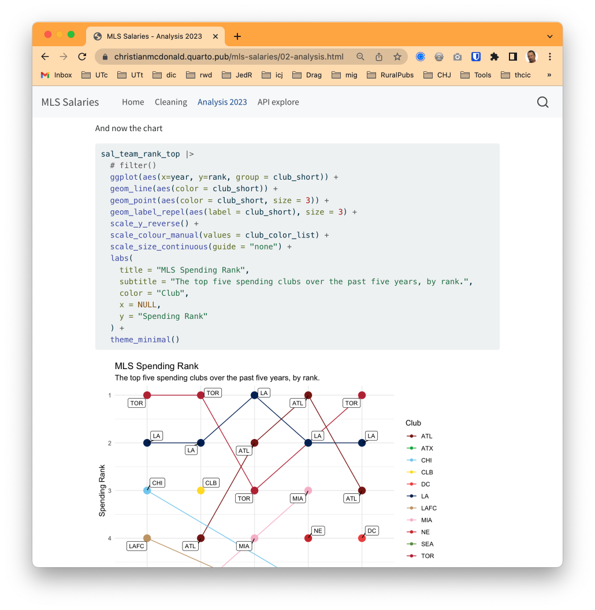
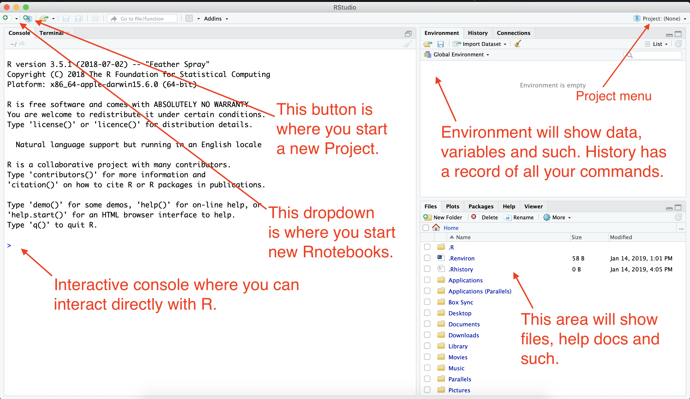
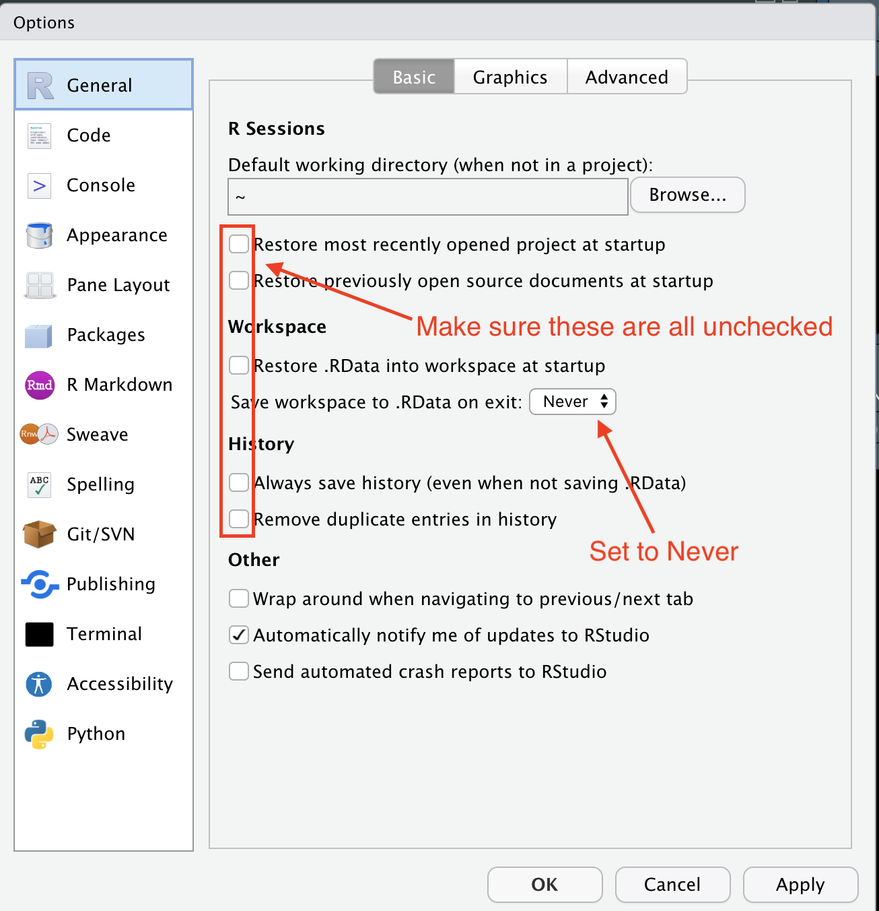
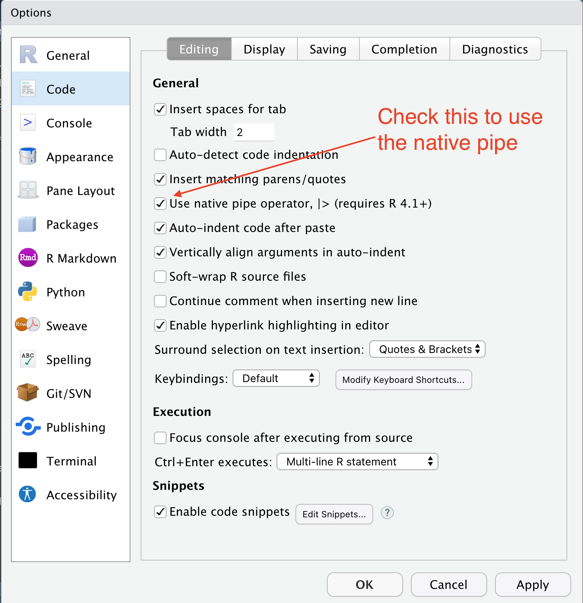

1 + 1[1] 2The purpose of this first module is to:
Before we dive into RStudio and programming and all that, I want to show you where we are heading, so you can “visualize success”. We are teaching a method for data journalism that is repeatable, transparent and annotated. When you do your work, you should intersperse notes and code, creating a document your future self can easily catch up on, or that you can share with others. The best way to explain this is to show you an example.
This is a website with all the code from a data journalism project. If you click on the navigation link for Cleaning you can read where the data come from and see all the steps I went through – with code and explanation – to process the data so I could work with it. And in the Analysis 2023 notebook you’ll see I set out with some questions for the data, and then I wrote the code to find my answers. Along with the way I wrote explanations of how and why I did what I did.

This website was created using Quarto and R, and the tool I used to write everything was RStudio.
This document you are reading also a Quarto document. Our lessons have explanations, instructions and code you can run right on your computer. You’ll also be asked to write write and run some on your own code.
You can read this lesson text there, but realize that rendered page doesn’t update with edits in the Quarto document unless you tell it to.
Keep this in mind:
When you launch RStudio, you get a screen that looks like this:

Some things of note here:
I’m considering skipping this section entirely since we don’t have much time - crit
There are some preferences in RStudio that I would like you to change. By default, the program wants to save the state of your work (all the variables and such) when you close a project, but that is typically not good practice. We’ll change that.

Next we will set some value is the Code pane.

We’ll get into why we did this part later.
R is an open-source language, which means that other programmers can contribute to how it works. It is what makes R beautiful.
What happens is developers will find it difficult to do a certain task, so they will write code that solves that problem and save it into an R “package” so they can use it later. They share that code with the community, and suddenly the R garage has an “ultimate set of tools” that would make Spicoli’s dad proud.
One set of these tools is the tidyverse developed by Hadley Wickham and his team at Posit. It’s a set of R packages for data science that are designed to work together. I highly recommend Wickham’s book R for data science, which is free.
There are also a series of useful tidyverse cheatsheets that can help you as you use the packages and functions from the tidyverse. We’ll refer to these throughout the course.
There are two steps to using an R package:
install.packages("package_name"). You only have to do this once for each computer, so I usually do it using the R Console instead of in a notebook. We installed most of ours already.library(package_name). This has to be done for each notebook or script that uses it, so it is usually one of the first things you’ll see in a notebook.We use “quotes” around the package name when installing it, but we DON’T need quotes when we load it with library(package_name).
install.packages(c("quarto", "rmarkdown", "tidyverse", "janitor"))You’ll see a bunch of response fly by in the Console. It’s probably all fine unless it ends the last response with an error.
While you used the R console above to interact with R (yes, that is what you were doing), we will mostly add code to our notebooks using code chunks.
[1] 2 which is a row number [1] and the answer to the match equation 2.1 + 1[1] 2There is a keyboard command to run a line of code, and it is among five key commands we really suggest you use. Presented for Mac:
All of these options are also in the Run menu at the top of the document.
The best way to insert a new code chunk is to use the keyboard command Cmd-option-i. That said, there is also a green +c button above the document near that Run menu.
2 + 2 and then run the chunk to see the answer.There is a sample data set in R called cars that has the stopping distance of cars as measured some time in history. We’ll use it to show a couple more things about code blocks.
The code chunk below has two lines of code:
cars, which prints out the data.plot() with cars inside of it. That function acts on the cars data to create a scatter plot.carsplot(cars)
Since we have two lines with two different outputs, the Quarto notebook shows them as panes you can swap back and forth. The rendered page shows each line of code, then its output.
data.frame part is printing out data. There is a lot of information available in that printout, including the number of rows (we call them observations) and columns (we call them variables), the names of those columns/variables, the data types of each variable, and then their values. We call data like this a “data frame” or “tibble”. It’s like a highly structured spreadsheet.plot() took the only two variables in the data and, well, plotted them.Yes, it can be that easy to visualize data in R. But not usually.
Now that you’ve been introduced to how a Quarto document is written, go ahead and re-render this page by using the Render button or Cmd-shift-k.